Guacamole’s user interface#
Guacamole provides access to much of the functionality of a desktop from within your web browser. Although most people use remote desktop tools only when absolutely necessary, we believe that Guacamole must be aimed at becoming a primary means of accessing desktops, and the interface is thus intended to be as seamless and unobtrusive as possible.
Home screen#
Once you have successfully logged in, you will be taken to either the Guacamole home screen, where all available connections are listed, or directly to a connection, if you only have access to one connection.
The home screen will contain a list of all connections to which you have access, along with thumbnails of any recently used or active connections. If you have access to a large number of connections and wish to quickly locate a specific connection, you can also enter search terms within the “Filter” field to filter the list of connections by name.
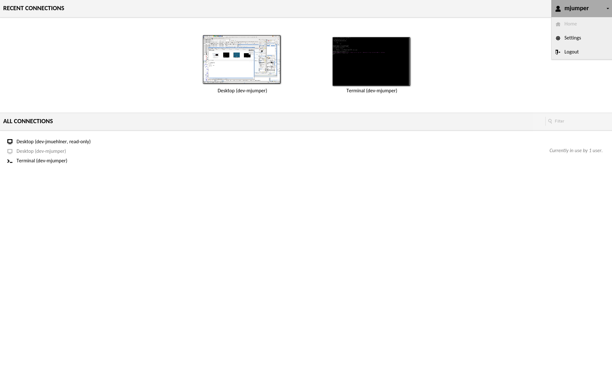
Clicking on any connection will open that connection within the current window or tab, but multiple connections can be used simultaneously. You can easily navigate back to the home screen without disconnecting by using your browsers back button or the “Home” button in the Guacamole menu. Each connection you use will remain active until explicitly disconnected, or until you navigate away from Guacamole entirely. Active connections can be seen as thumbnails updating in real-time on the home screen.
Client screen#
Once you open a connection, you will see a real-time view of the remote display. You can interact with this display just as you would your normal desktop. Your mouse and keyboard will function as if they were connected directly to the remote machine.
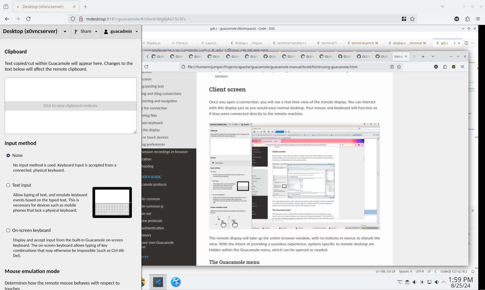
The remote display will take up the entire browser window, with no buttons or menus to disturb the view. With the intent of providing a seamless experience, options specific to remote desktop are hidden within the Guacamole menu, which can be opened as needed.
Copying/pasting text#
At the top of the Guacamole menu is a text area labeled “clipboard” along with some basic instructions:
Text copied/cut within Guacamole will appear here. Changes to the text below will affect the remote clipboard.
If the clipboard API is enabled, the contents of the local clipboard will automatically be synchronized to Guacamole, and ultimately to the clipboards of the remote systems (assuming the functionality has not been disabled. The text area, here, functions as a manual interface to the clipboard, allowing text to be manually manipulated - text that you type, or paste into the text area will be available to the remote clipboard, and text that is placed on the remote clipboard it can be seen in this text area.
For privacy and security reasons, the contents of the clipboard are initially hidden when the Guacamole menu is opened. Instead, a banner with further instructions is displayed:
Click to view clipboard contents.
Upon clicking the text area, the contents of the clipboard will be shown and may be edited or replaced. The clipboard will remain visible until the Guacamole menu is closed.
Switching and tiling connections#
If you have access to more than one connection, clicking the current connection name at the top of the Guacamole menu will open a drop-down menu containing a list of your other available connections:
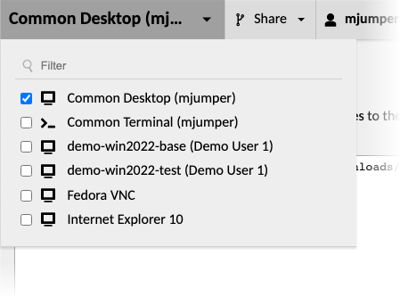
Clicking on the name of another connection in this drop-down menu will immediately switch to that connection. The previous connection will remain running as a thumbnail within a panel attached to the lower-right corner of the screen. This panel updates in real-time and remains visible as long as you have multiple active connections, even if you navigate away to another part of the Guacamole application:
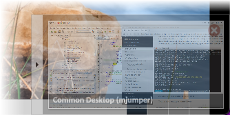
Clicking on any connection within the panel will navigate back to that connection, while clicking the “X” icon in the upper-right corner of the connection thumbnail will immediately close the connection.
Adding a connection to the current view#
Multiple connections may also be opened simultaneously within the same view by clicking the checkboxes next to the names of those connections in the connection menu:
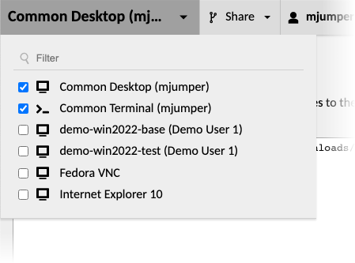
All connections opened in this way are automatically arranged in equally-sized tiles to fill the available area:
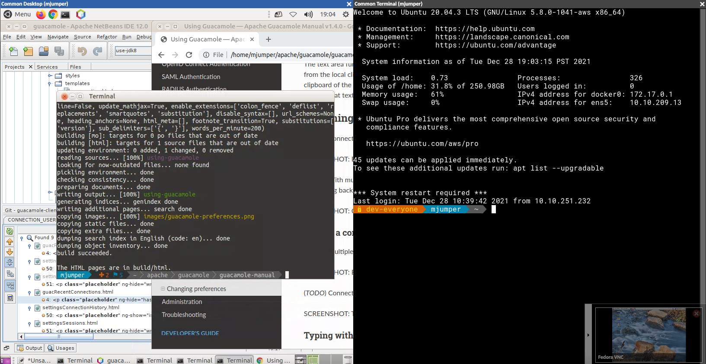
With multiple connections displayed as tiles, keyboard interaction and the Guacamole menu will only affect the currently focused connection, as indicated by the blue title and border. Clicking or tapping within another connection will change the focus and allow keyboard interaction with that connection.
Typing with multiple connections#
By holding down Ctrl (to select an individual connection) or Shift (to select a rectangle of connections), multiple connection may be focused at the same time. While multiple connections are focused, each key pressed will be broadcast across each focused connection:
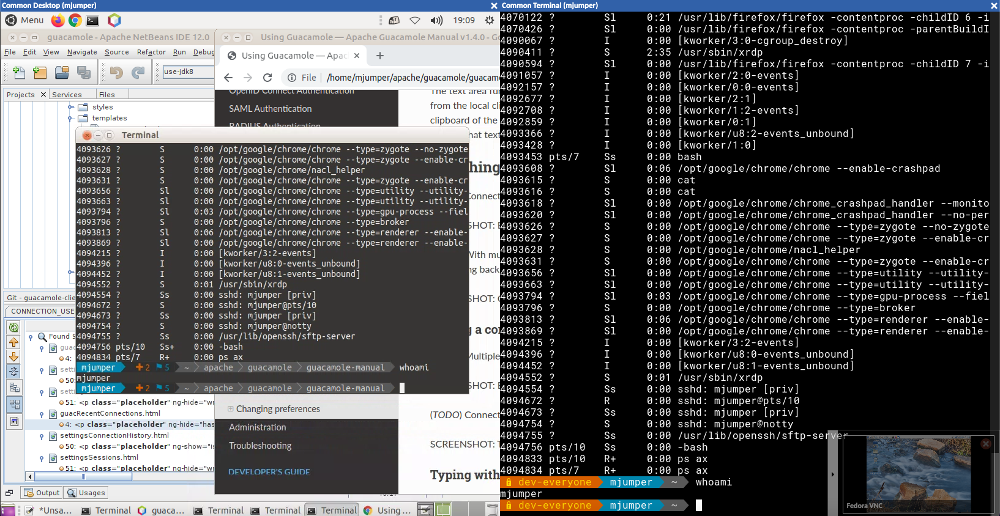
This is particularly useful for running the same series of commands on multiple computers. Further, since Guacamole automatically translates between the user’s local keyboard layout and the keyboard layout of the remote server, this will work as expected even if the keyboard layouts of focused connections do not match.
Transferring files#
You can transfer files back and forth between your local computer and the remote desktop if it is supported by the underlying protocol and enabled on the connection. Currently, Guacamole supports file transfer for VNC, RDP, and SSH, using either the native file transfer support of the protocol or SFTP.
Files can be transferred to the remote computer by dragging and dropping the files into your browser window, or through using the file browser located in the Guacamole menu.
Using the file browser#
If file transfer is enabled on the connection, you will see one or more filesystem devices listed within the Guacamole menu. Clicking on one of the filesystems opens a file browser which lists the files and directories within that filesystem.
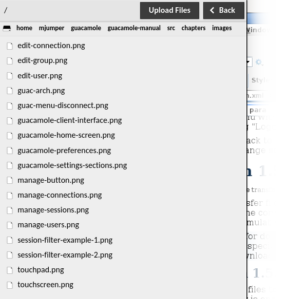
Double-clicking on any directory will change the current location of the file browser to that directory, updating the list of files shown as well as the “breadcrumbs” at the top of the file browser. Clicking on any of the directory names listed in the breadcrumbs will bring you back to that directory, and clicking on the drive icon on the far left will bring you all the way back to the root level.
Downloads are initiated by double-clicking on any file shown, while uploads are initiated by clicking the “Upload Files” button. Clicking “Upload Files” will open a file browsing dialog where you can choose one or more files from your local computer, ultimately uploading the selected files to the directory currently displayed within the file browser.
The state of all file uploads can be observed within the notification dialog that appears once an upload begins, and can be cleared once completed by clicking the “Clear” button. Downloads are tracked through your browser’s own download notification system.
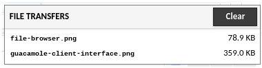
When you are done browsing the filesystem and transferring files, click “Back” to return to the Guacamole menu.
The RDP virtual drive#
RDP provides its own native support for file transfer called “drive redirection” or “RDPDR”. Guacamole provides support for this mechanism by emulating a virtual drive. Typically, this virtual drive will appear as a network drive within the RDP session. Files uploaded and downloaded will be preserved within this drive, even after disconnecting.
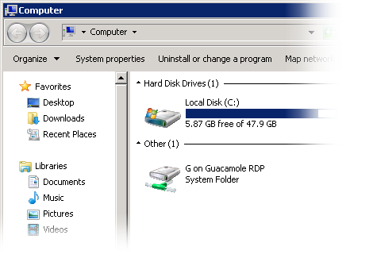
Files can be downloaded from this drive using the file browser in the Guacamole menu or using the special “Download” folder within the virtual drive. All files dropped into this folder will automatically begin uploading to the client, and thus downloading through the browser.
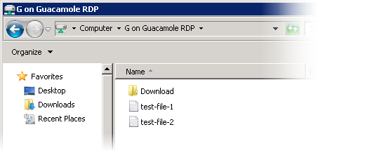
guacctl / guacget#
In addition to traditional drag-and-drop and the file browser, Guacamole’s SSH support can be used with the guacctl utility. The guacctl utility is a simple shell script included with Guacamole which allows you to use and configure file transfer directly from the command line within the SSH session:
$ guacctl
guacctl 0.8.0, Guacamole SSH session control utility.
Usage: guacctl [OPTION] [FILE]...
-d, --download download each of the files listed.
-s, --set-directory set the destination directory for future uploaded
files.
$ guacctl -d FILENAME
$ guacctl -s DIRECTORY
$
For convenience, you may also create a symbolic link or alias to
guacctl called guacget. When run as guacget,
the utility behaves as if the --download option were supplied and initiates a
download for each file specified on the command line.
On-screen keyboard#
Certain key combinations are impossible to press within a web application like Guacamole because they are reserved by the operating system (Ctrl+Alt+Del or Alt+Tab, for example) or by the web browser. If you press one of these reserved combinations, the effect will be observed locally, not remotely, and the remote desktop will receive only some of the keys.
Guacamole provides its own, built-in on-screen keyboard which allows keys to be sent to the remote desktop without affecting the local system. If the device you’re using does not have certain keys which the remote desktop depends on, such as the arrow keys or Ctrl, you can use the on-screen keyboard for this, too. You can show the on-screen keyboard by selecting the “On-screen keyboard” option from the menu.
Clicking (or tapping) the buttons of the on-screen keyboard has the same effect as pressing the same buttons on a real keyboard, except that the operating system and browser will not intercept these keypresses; they will only be sent to the remote desktop.
Scaling the display#
Guacamole will default to shrinking or expanding the remote display to fit the browser window exactly, but this is not necessarily ideal. If the remote display is much larger than your local display, the screen may be impossible to see or interact with. This is especially true for mobile phones, whose screens need to be small enough to fit in the average hand.
You can scale the display on touch devices by using the familiar pinch gesture. Place two fingers on the screen and bring them closer together to zoom out or further apart to zoom in.
If your device lacks a touch screen, you can also control the zoom level through the menu. The controls for zooming in and out are located at the bottom of the menu. The current zoom level is displayed between two “-” and “+” buttons which control the zoom level in 10% increments.
Mobile or touch devices#
Guacamole is designed to work equally well across all HTML5 browsers, including those of mobile devices. It will automatically handle input from a touch screen or a traditional mouse (or both, if you happen to have such a gifted computer), and provides alternative input methods for devices which lack a physical keyboard.
Mouse emulation#
In the case that your device has a touchscreen and lacks a mouse, Guacamole will emulate a mouse for the sake of interacting with remote desktops that expect mouse input. By default, Guacamole uses “absolute” mouse emulation. This means that the mouse pointer is positioned at the location of each tap on the screen.
In both absolute and relative modes, you can click-and-drag by tapping the screen and then quickly placing your finger back down. This gesture only causes the mouse button to press down, but does not release it again until you lift your finger back up.
Absolute mode (touchscreen)#
Absolute mouse emulation is the default as it tends to be what people expect when using a touch device to interact with applications designed for mouse input.
Each tap on the screen is translated into a left-click at that position. Right-clicking is accomplished through pressing and holding your finger on the screen. If parts of the remote display are off-screen, you can drag your finger around the screen to pan the off-screen parts back into view.
Although absolute mouse emulation works generally well, a finger makes for a very inaccurate pointing device. To address this, Guacamole also provides “relative” mouse emulation. Relative mouse emulation provides a way to deal with the need for accurate pointer control, when a true pointer device is not present.
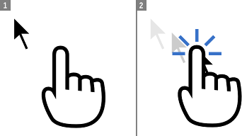
Relative mode (touchpad)#
Guacamole’s relative mouse emulation behaves similarly to the touchpad present on most modern laptops. You drag your finger across the display to move the mouse pointer, and tap the display to left-click. The pointer moves relative to the motion of your finger. Right-clicking is accomplished with a two-finger tap, and middle-clicking with a three-finger tap. The mouse scroll wheel can be operated by dragging two fingers up or down.
Because the relative mouse emulation reserves so many gestures for the different mouse buttons and actions, common touch gestures like panning and pinch-to-zoom will not work while relative mouse emulation is enabled. Instead, the screen will automatically pan to keep the mouse pointer in view, and you can zoom through the buttons in the menu.
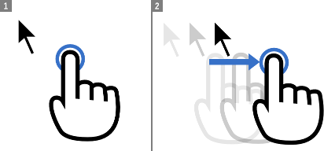
Typing without a physical keyboard#
Many mobile devices lack a physical keyboard entirely, and instead provide their own on-screen keyboards. As these are not true keyboards per se and do not produce key presses, Guacamole’s text input mode is required for typing on these platforms.
“Text input” allows input of keystrokes based on the input of text. Choosing “Text input” tells Guacamole to infer keystrokes by tracking text entered, rather than relying on actual key presses. Guacamole will instead determine the combination of keypresses necessary to produce the same pattern of input, including deletions.
If you wish to type via an IME (input method editor), such as those required for Chinese, Japanese, or Korean, text input mode is required for this as well. Such IMEs function through the explicit insertion of text and do not send traditional key presses. Using text input mode within Guacamole thus allows you to use a locally-installed IME, without requiring the IME to be installed on the remote desktop.
Changing preferences#
User preferences can be changed within the settings screen. These preferences are stored locally within the browser, so if you use multiple computers to access Guacamole, you can have different settings for each location. The settings screen allows users to change the language of the Guacamole interface, to change the default input method used by Guacamole connections, and to change the default mouse emulation mode for if a touch device is used. If you have sufficient permissions, you may also change your password, or administer the system.
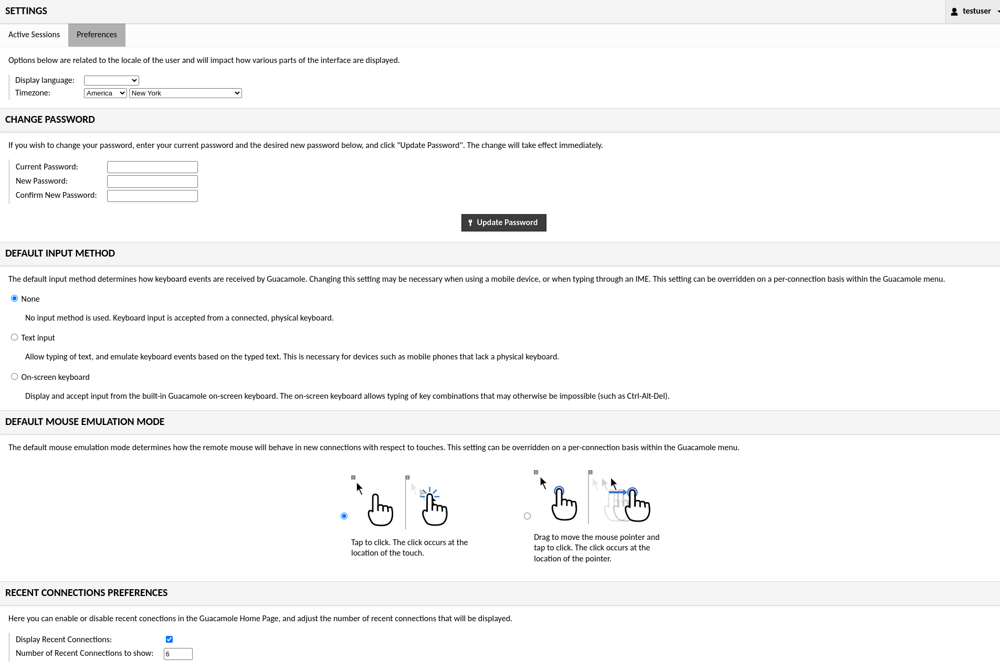
Display language#
The Guacamole interface is currently available in English, Dutch, French, German, Italian, and Russian. By default, Guacamole will attempt to determine the appropriate display language by checking the language preferences of the browser in use. If this fails, or the browser is using a language not yet available within Guacamole, English will be used as a fallback.
If you wish to override the current display language, you can do so by selecting a different language within the “Display language” field. The change will take effect immediately.
Changing your password#
System administrators can restrict the ability of individual users to change their own passwords, so this section may not always be available. If your account does have permission, the preferences screen will contain a “Change Password” section.
To change your password, you must provide your current password, enter the desired new password, and click “Update Password”. You will remain logged in, and the change will affect any future login attempt.
Default input settings#
Guacamole provides multiple keyboard input methods and multiple mouse emulation modes. Many of these settings are specifically useful for touch devices, while others are aimed mainly at traditional desktop use. By default, Guacamole will use the keyboard and mouse modes most commonly preferred by users, but you can change these defaults if they do not fit your tastes or your current device.
The choices available mirror those within the Guacamole menu discussed earlier in this chapter, and changing these settings will affect the default values selected within the Guacamole menu of future connections.
Recent connection settings#
The user interface can be configured with regard to whether recent connections are displayed and how many are tracked. The default setting is to track the most recent 6 connections, but you can use the checkbox to disable the recent connections area altogether, or you can adjust the number of recent connections kept in history from the default of 6.